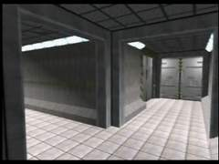

|
| Soluce
Goldeneye : Bunker II |
Peut-etre un des Niveaux les plus durs en 00 Agent, because pleins de Gardes, de Portes, de longs couloirs etc. Attention au KF7 Soviet, qui rameute tout le monde, et quand je dis tout le monde c'est TOUT le monde. Pour plus de sécurité, tirez en zoomant, vous pourez ainsi shooter une Balle par une Balle sans faire trop de bruit. Pratique ! |
| Comparer
Liste du Staff / Blessés : Secret Agent / 00 Agent |
Pour cet Objectif, vous devez retrouver 2 Documents. Le 1er Document est pas loin de la Prison, l'autre est plus loin, dans une Salle bourrée de Gardes. Allons-y. Chopez la Clé avec la Montre Magnétique, et si vous sortez vite de votre Cellule, vous trouverez un Couteau de Lancer. Sortez et vous vous retrouverez dans un Couloir. |
